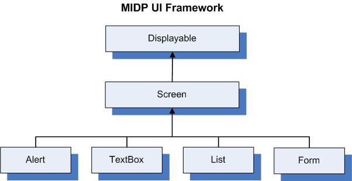
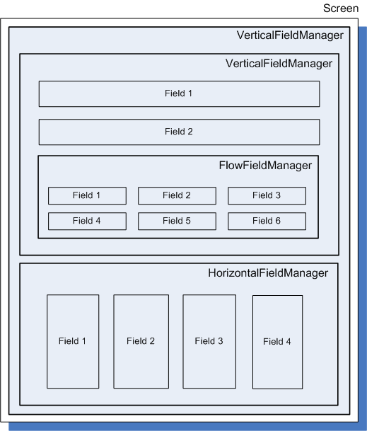
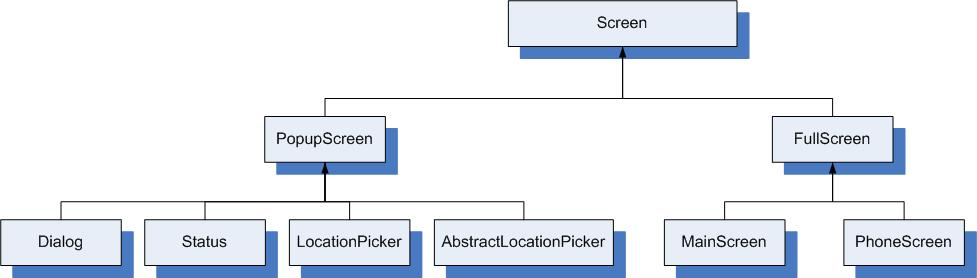

|
|||||||||
| PREV NEXT | FRAMES NO FRAMES | ||||||||
This document describes how to create UIs for BlackBerry® device applications. This document includes the following sections:
For more information about UI development, visit www.blackberry.com/go/devguides to read the BlackBerry Java SDK UI and Navigation Development Guide. For additional resources, visit www.blackberry.com/developers.
You can create UIs for the BlackBerry device using the following frameworks:
Packages: net.rim.device.api.browser.field, net.rim.device.api.browser.field2, net.rim.device.api.lbs, net.rim.blackberry.api.spellcheck, net.rim.device.api.ui, net.rim.device.api.ui.accessibility , net.rim.device.api.ui.autotext, net.rim.device.api.ui.component, net.rim.device.api.ui.container, net.rim.device.api.ui.decor, net.rim.device.api.ui.extension.container, net.rim.device.api.ui.extension.component, net.rim.device.api.ui.image , net.rim.device.api.ui.menu , net.rim.device.api.ui.picker, net.rim.device.api.ui.text
To create UI applications that are optimized to run on BlackBerry devices and interact efficiently with core applications (such as the Messages application and Phone application), use the BlackBerry UI APIs. Applications that use the BlackBerry UI APIs cannot run on other mobile devices.
For more information about the BlackBerry UI APIs, see the package overview.
Packages: javax.microedition.lcdui, javax.microedition.lcdui.game, javax.microedition.midlet
MIDlets are applications that use only the standard Mobile Information Device Profile (MIDP) APIs and Connected Limited Device Configuration (CLDC) APIs. The BlackBerry® Java® SDK currently supports both MIDP 1.0 (JSR 37) and MIDP 2.1 (JSR 118). MIDlets run on BlackBerry devices and other devices that support the Java Platform, Micro Edition (Java® ME) platform.
For more information about the MIDP UI APIs, see the package overview.
Packages: org.w3c.dom, org.w3c.dom.events, org.w3c.dom.svg, net.rim.plazmic.mediaengine, net.rim.plazmic.mediaengine.io
Scalable Vector Graphics (SVG) is a text-based markup language, similar to HTML, that represents 2D vector graphics, animation, and interactivity. SVG support was added to Java ME with JSR 226. Vector graphics rely on geometrical primitive objects such as lines, circles, polygons. Because they are based on geometry, vector graphics can be easily manipulated without loss of accuracy. SVG has the advantage of automatically scaling objects to the screen resolution on a mobile device. You can use SVG for both MIDlets and BlackBerry Java Applications.
There are two ways to use SVG in your applications on a BlackBerry device:
Packages: net.rim.device.api.openvg, net.rim.device.api.opengles
The Graphics Utility API is new in BlackBerry Java SDK 6.0. The API is designed to simplify OpenVG™ and OpenGL® ES development on BlackBerry devices while also optimizing performance. Because this API is included in the BlackBerry UI APIs, applications that use this API cannot run on other mobile devices.
The VGField class and GLField class are included in this API.
While you can use either MIDP APIs or BlackBerry UI APIs, consider the following advantages that are available when you use the BlackBerry UI APIs to create UIs.
A major difference between the MIDP API and BlackBerry UI APIs is the number of display options permitted. MIDP separates UI components into high- and low-level APIs. When you use the high-level APIs to make it easier to run your application on other mobile device platforms, you can view only one Displayable object, which represents the device screen, at one time. As a result, you can view only certain types of UI components at a time. For example, you cannot combine a List with another type of UI component, such as a Form.

In contrast, the BlackBerry UI APIs are very flexible. The three main UI objects are Screen, Manager, and Field. A screen is the top-level container for the UI elements that what you want to display in your application. Screens can contain fields, such as text fields, radio buttons, and drop-down lists. Screens can also contain layout managers, which contain sets of fields. And because layout managers are fields themselves, they can contain other managers. This architecture provides you with a lot of flexibility when designing your UI.
The BlackBerry API provides a number of layout managers. The following layout managers are most commonly used:
Even using only these three types of managers, you can create rich layouts in your screens. For example:

The BlackBerry APIs provide several ways to display particular types of data in a field. Consider the following fields:
In addition to the useful field types that are defined in the BlackBerry UI API, you can create your own field types. The BlackBerry UI API provides you with the functionality to extend the Field class to create any type of field.
class MultiElementTextField extends Field
{
// we must extend field
String[] _texts; // an array of text segments
int[] _spaces; // an array containing the amount of space
// allocated to each text segment
int_buffer; // an integer value which represents
// the amount of buffer space between
// each text segment
/* Constructor sets up each of the data arrays
and the buffer value */
public MultiElementTextField(Object[] data, int buffer, long style)
throws IllegalArgumentException
{
super(style); // a call to super, this sets up the
// particular style of the field.
int n = data.length;
if ((n % 2) != 0)
{
throw new IllegalArgumentException("Invalid number of elements");
}
else
{
_texts = new String[n / 2];
_spaces = new int[n / 2];
}
for (int i = 0; i < n ; i = i + 2)
{
_texts[i / 2] = (String)data[i];
_spaces[i / 2] = ((Integer)data[i+1]).intValue();
}
_buffer = buffer;
}
public boolean isFocusable()
{
// this field can accept the focus, return true
return true;
}
/* we use layout to determine the extent of the field,
we ultimately call setExtent(int, int) with the total field size */
public void layout(int width, int height)
{
Font font = getFont();
int _fieldHeight = font.getHeight();
int _fieldWidth = 0;
int n = _spaces.length;
for (int i = 0; i < n; ++i)
{
_fieldWidth += _spaces[i];
if (i < n - 1)
{
_fieldWidth += _buffer;
}
}
setExtent(_fieldWidth, _fieldHeight);
}
/* paint draws the text objects to the screen using the
Graphics object passed in. Here we are using the values
from buffer and spaces[] to determine the location and
size of each segment of text. We use the ELLIPSIS style
to handle text that is too long for its allocated space
by replacing any characters that do not fit with ... */
public void paint(Graphics graphics)
{
int xpos = 0;
int n = _spaces.length;
for (int i = 0; i < n; ++i)
{
graphics.drawText(_texts[i],xpos,0,graphics.ELLIPSIS,_spaces[i]);
xpos += _spaces[i];
if (i < n - 1)
{
xpos += _buffer;
}
}
}
} |
To create custom fields using the MIDP APIs, you can use the CustomItem class. However, unlike Field extensions, this approach does not allow you to easily modify display options such as borders, layout, and theming.
The BlackBerry API provides layout managers that offer flexibility when displaying fields. You declare a layout manager at the top level of your screen, and then add fields to it. Because layout managers are subclasses of Field, they can be embedded in other layout managers. You can also define your own layout manager.
Click for code sample: Create a custom layout for a screen
class LayoutManager extends Manager
{
public LayoutManager()
{
//construct a manager with vertical scrolling
super(Manager.VERTICAL_SCROLL);
}
//overwrite the nextFocus method for custom navigation
protected int nextFocus(int direction, boolean alt)
{
//retrieve the index of the current field that is selected
int index= this.getFieldWithFocusIndex();
if(alt)
{
if(direction 0){...}
else ...}
}
// if we did not handle it, let the manager's parent class
if (index == this.getFieldWithFocusIndex())
return super.nextFocus(direction, alt);
else
return index;
}
protected void sublayout(int width, int height)
{
Field field;
//get total number of fields within this manager
int numberOfFields = getFieldCount();
int x = 0;
int y = 0;
for (int i = 0;i < numberOfFields;i++)
{
field = getField(i); //get the field
setPositionChild(field,x,y); //set the position for the field
layoutChild(field, width, height); //lay out the field
y += ...;
...
}
setExtent(width, height);
}
public int getPreferredWidth()
{
return 160;
}
public int getPreferredHeight()
{
int height= 0;
int numberOfFields= getFieldCount();
for (int i= 0; i < numberOfFields; i++)
{
height+= getField(i).getPreferredHeight();
return height;
}
}
/****************
Main Class
****************/
...
RichTextField myField = new RichTextField("Hello");
RichTextField myOtherField = new RichTextField("World");
LayoutManager myManager = new LayoutManager();
MainScreen myScreen = new MainScreen();
myScreen.add(myManager);
myManager.add(myField);
myManager.add(myOtherField);
} |
In the MIDP API, the component that is most closely related to a layout manager is Form. A Form arranges Item objects vertically on the screen, but does not allow you to change the order that the items are displayed in. As a result, if your UI requires a specific ordering, involves frequent scrolling between fields, or involves a horizontal field layout, BlackBerry API layout managers are more suitable.
The BlackBerry UI API has two main types of Screen objects, PopupScreen and FullScreen. PopupScreen is subclassed by Dialog, Status, LocationPicker, and AbstractLocationPicker. FullScreen is subclassed by MainScreen and PhoneScreen.

You can use the BlackBerry UI API to display information that is supplementary to your application in a pop-up screen without interrupting the flow of the application. As a result, you do not have to leave the main screen and then return to it later. In addition, you can prioritize which PopupScreen objects are pushed to the top of the display stack by invoking pushGlobalScreen(Screen, int, int).
Because MIDP is intended for devices with minimal screens, such as mobile phones, Alert objects function differently from PopupScreen objects in the BlackBerry APIs. Alert objects are screens that use the entire screen when they are invoked.
The MIDP UI prioritizes commands according to the device specifications, and assigns certain commands to soft keys, which are keys that are not hard-coded on the mobile device. BlackBerry devices organize commands on a menu that you can access by pressing the Menu key. You can specify the order of menu items and the menu item that is selected by default when the menu opens. In addition, you can add or remove menu items depending on the screen or application state when the menu displays.
The MIDP API includes one default type of listener, CommandListener. You can register only one CommandListener for each Displayable object. After you register a CommandListener with the Displayable object, you can write code to perform an action when a user selects that object. For example, you can assign a command listener to a Form, and then perform an action when the user selects an item in the Form. The MIDP API also contains functions for basic event handling that is based on keyboard input.
The BlackBerry UI API offers a flexible implementation of listeners that is based on a more complex organization of components on a screen. The BlackBerry UI API contains a generic event listener model that permits you to implement listeners for many types of events, such as when a field is changed, or when the user presses a key, clicks the trackpad or trackball, or touches the touch screen.
When you create UI applications that are MIDlets, you can use BlackBerry APIs to provide specific functionality that is only available for BlackBerry Java Applications. For example, if your MIDlet must notify users when specific events take place, it can invoke the methods that are available in the net.rim.device.api.notification package. As a result, your application cannot run on other mobile devices.
You can use most of the BlackBerry APIs in your MIDlet. However, do not try to use any classes in the net.rim.device.api.ui package. Using these classes in a MIDlet is unsupported, and, because of potential incompatibility with future BlackBerry® Device Software releases, may result in an unpredictable user experience.
Some standard components in the BlackBerry UI API —including activity and progress indicators in the net.rim.device.api.ui.component.progressindicator package and lists and tables in the net.rim.device.api.ui.component.table package—use the Model-View-Controller (MVC) design pattern.
Before using these components, you should be familar with the MVC design pattern. There are many print and online resources where you can learn about MVC.
All UI applications that are written using the BlackBerry UI APIs contain one event dispatcher thread. The thread that invokes Application.enterEventDispatcher() becomes the event dispatcher thread and starts to process events.
You can add a runnable object to the event queue. Create a class that implements the Runnable interface, then add the Runnable object to the event queue by using one of the following methods (which are located in the net.rim.device.api.system.Application package):
Any thread can modify a Screen object before it is pushed on to the display stack or after it is popped off of the display stack.
Click for code sample: Invoke invokeLater(Runnable runnable) to update a screen on the event thread
UiApplication.getUiApplication().invokeLater (new Runnable()
{
public void run()
{
//Perform screen changes here.
//Calling invalidate() on your screen forces the paint method to be called.
screenName.invalidate();
}
}); |
You can use background threads to access the UI by acquiring the event lock for a short time. Invoke Application.getEventLock() on the background thread to retrieve the event lock, and then synchronize this object to serialize access to the UI. You should only hold this lock for short periods of time because the event dispatcher thread is paused. An application should never call notify() or wait() while holding the event lock on the background thread.
Screen objects are pushed on to the display stack by using the pushScreen() and pushModalScreen() methods of the UiApplication class. Because pushModalScreen() blocks until the screen is popped off of the display stack (where pushScreen() returns immediately), the order of operations is crucial when you use modal screens. Do not invoke pushModalScreen() before starting the event dispatcher thread; doing so throws a RuntimeException. Other methods, such as Dialog.inform() and Dialog.alert(), also use pushModalScreen().
Click for code sample: Display a modal screen and non-modal screen efficiently
public class MyApp extends UiApplication implements Runnable
{
public MyApp()
{
MainScreen screen = new MainScreen();
screen.setTitle("My Application");
screen.add(new LabelField("Welcome to my application!"));
this.pushScreen(screen);
}
public static void main(String[] args)
{
MyApp app = new MyApp();
new Thread(app).start();
app.enterEventDispatcher();
}
public void run()
{
while (! this.hasEventThread())
{
Thread.yield();
}
this.invokeAndWait(new Runnable()
{
public void run()
{
Dialog.inform("This dialog is being displayed");
}
});
}
}
|
|
Copyright 1999-2011 Research In Motion Limited. 295 Phillip Street, Waterloo, Ontario, Canada, N2L 3W8. All Rights Reserved. |
Legal |